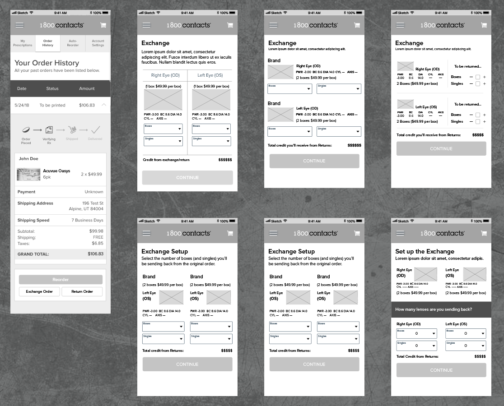
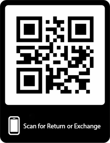

Disclaimer
The Challenge
Big Commerce says, "the number of American e-commerce shoppers at 96%, that's more than 310 million people. The National Retail Federation has found that 15 to 30 percent of those purchases are going to be returned." Although that number is high there were some data findings that said this could be even higher. In a study done by CPC Strategy 34% of the people interviewed attributed 'difficult returns' as the reason for not purchasing online. That is a large percentage of people that could be potential 1800Contacts customers. That isn't to say that they don't have a great return policy. 1800contacts has one of, if not the best in the contact business (I'm not just saying that because I work here). They take back even open boxes and singles, which no other place does.
Although it is a great return policy it can be considered difficult. The only way to set up a return is by calling an agent on the phone or through an online chat conversation with an agent. The process is easy when you call/chat in, but it can be that much easier if there was a method to do it online where a customer could set it up themselves. More research I've done shows that 92% of consumers will buy something again if the returns are made easy. Let's retain those customers.

Empathize
So far, from what I have learned, online shoppers are my targeted users. Chances are at some point you will have to return something and as the research has shown an easy return process can only help your business. My goal is to reach the 34% of people that didn't want to purchase online because of the difficult return process and the 92% of consumers that will buy something again if the return process is easy for them. Ultimately an easy return process will only drive the business to be more successful.
To better understand my user I wanted to see how our current return process was established. This would allow me to know what pain points I might need to resolve along with parts that we at 1800contacts are doing well. This way we can progress forward to make the best user experience possible. I started by creating a user flow chart to determine the current process as they are divided into two processes. This is determined by whether a user wants to exchange an existing product for a new product or if they are wanting to solely do the return. To get the full experience I actually helped a friend exchange some of her lenses due to a change in her prescription. Having worked here I knew the process but this allowed me to fully experience how the flow worked and the issues that came with it.
The flowchart that I made was left out on purpose to avoid releasing any potential proprietary business knowledge. However, the flowchart fulfilled its purpose in the fact that I was able to better understand our users by going through the step by step process of how they would set up an exchange or a return. This was crucial in determining everything that needed to be done.

Define
With so many statistics supporting that easy return processes are essential in gaining and retaining customers, defining what I wanted to do with this project was very simple and straight to the point.
I wanted to come up with an easy process to set up a return or exchange without having to speak with a customer service representative if this was the desire of our user. While I was working on the digital chat team a number of our customers would ask how they could set up their exchange or return online or they would express their frustration with no option to do so online. I knew this was part of our user experience that needed to be addressed, after all, we are an online distributor with no stores to drive to for returning items. It would only make sense that there was a way to do this online.
Working with our Business Analyst
I knew what I wanted to do with the project but I wanted to get the help of our business analyst to see if I might be able to pinpoint anything else that we might be missing. Another alarming statistic I came across said that 67% of shoppers will check the returns page before making a purchase. That would mean that a returns policy page is also important to a vast majority of our users. 1800contacts does have a return policy page which explains their guarantee on all their products, however, this page is fairly hard to find. You have to navigate to the footer, expand 'company info', then search for our Return Policy page under "Customer Resources".
Even though the link to the page is buried quite a bit, our business analyst said for the month of March (2018) we received on average about 102 visits per week to that specific page. This number wasn't as high as I anticipated, however, it can mean a couple of things. We could potentially be losing customers if they can't find our return policy very quickly, that is if they are in the percentage of those people that check return policies prior to making purchases. Or they might not be able to find that page altogether. Since we have a great return policy we might as well flaunt it. It could prove to be beneficial as a good returns process drives up sales. So to go along with the option to set up the returns online, I'd like to make our returns policy a little more noticeable so our users can know it's there and it's hassle-free.

Ideate
With a number of ways to set up exchanges/returns, I wanted to experiment a little bit to find out the simplest way so that we can couple our great returns policy with an exceptional customer experience. I started with wireframes to sketch out a few different ideas on what the exchange process might look like to our users. Overall I didn't want to venture too far off with what our current website looked like as we want to keep a consistent feel. A different look is jarring to the customer experience and I didn't want to take them out of it. I chose to keep the same format that we currently have to select quantity while making a purchase so that it was already intuitive to our customers on how to select the number of boxes and singles they'd be returning.
Initiating the Return/Exchange
One major factor in dealing with returns or exchanges is where I would want to initiate it. To me, the logical place for it would be under the order history account. After doing research with a couple of major companies (Amazon and Walmart) I was able to find out this is where they placed it as well. To take it one step further I logged into a dummy account used for testing purposes and tested this. I told my users that they just made a purchase of lenses and they needed to initiate a return and then I was able to watch them. Knowing that we have no official way of setting this up I was able to see where our users might look for a place to set that up. All of the users that this was tested on eventually ended up in the order history tab. I knew this would be great placement for the link to initiate the return.
Simple Just Got More Simple
A Smart Insights report states that of all worldwide internet users, 80% will access it from a smartphone. This makes the opportunity to use a QR code to grow substantially. The process I came up with isn't hard at all and is quite easy to follow. However, I wanted to take it one step further and make it even easier for our customers.
Each order placed at 1800contacts.com comes with an invoice or receipt for insurance purposes. I am choosing to put a QR code pertaining to that order on the invoice. By scanning the QR code it will open up our app and take them directly to the return/exchange page with the order associated with that QR code preloaded. This eliminates the need for them to search for the order number, and verify the contents. All they will have to do is select the number of boxes, and singles they are returning and hit continue to complete the process. (Queue Staple's "That Was Easy" button.)
Below is an original invoice from an order at 1-800Contacts, and the other invoice is a mockup with the QR Code that could be scanned.

Prototype
Since this project was merely adding a feature, I didn't find a huge need to build out the prototype as a whole. Through the 1800Contacts app, we already know that editing your prescription works properly and it was not something that needed to be tested through a prototype. Through the dummy accounts I mentioned earlier, I was able to gain most of the necessary information that I would have gotten through my prototype. I instead put together a short GIF showing how the QR Code method would look like to show you how easy it would be for our users.


Test
The next step of this project would be to test out the Exchange/Return process through the QR Codes. To do this step would involve having to print them out on the invoices to see if our users found this to be an easier solution. Unfortunately, I don't have the resources to test out the QR portion but I was able to test out the return/exchange portion of the app with a smaller prototype that was built with the higher fidelity product. Below are images of screens that were created. This was done by using a 1800contact UI Kit that was given to me. Some of the screens existed already as the updating prescriptions process wasn't the feature I was focused on. I was focused solely on the returns/exchange process. All those screens were created by me and how I envisioned the process being the easiest, and overall best experience for our users. I tried to keep the design consistent with the app as to not take the user out of the experience as it should flow smoothly.

Conclusion
1800Contacts is solely an online retailer, with no in-store returns. Since 1800Contacts is only online, it would only make sense that there was a way to initiate returns online. A great online experience for returns put together with our great exchange/returns policy is a recipe for future success and is something that definitely should be implemented. I hope by now I have proven my case that returns and exchanges are essential in driving up business. This is how I envisioned the process could be implemented.